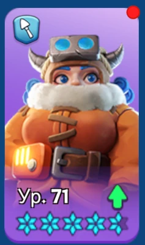
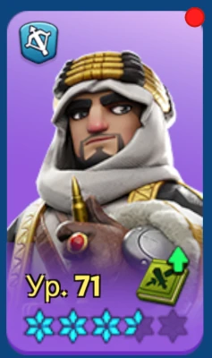
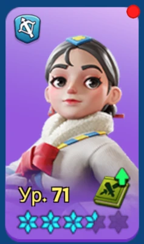

Для игрока
Запускай рейд по своей волне
Стартовая минута определяется положением твоего города вокруг Ловушки: 30, 29, 28, 27 или 26. После первого запуска повторяй рейд каждые 5 минут до последней полезной минуты своей волны. Новый рейд на отметке 5:00 или меньше уже не запускаем.
При вступлении ставь правильного первого героя
При присоединении базовый первый герой — Джесси или Джассер. Со-Юн используется в отдельных случаях. Первый герой важен из-за своего экспедиционного навыка, поэтому случайного героя по одной только мощности первым не ставим.
Отправляй те войска, которые реально есть
Не держи марш дома ради «идеальной» пропорции. На молодом государстве нормальны неполные и смешанные марши. Важнее, чтобы доступные войска постоянно участвовали в рейдах.
После возврата сразу отправляй войска снова
Выбирай подходящий рейд, который отправится раньше. Не жди несколько минут конкретного сильного лидера, если другой нормальный рейд уйдёт заметно раньше.
Заполняй все доступные маршевые очереди
Если у тебя открыто шесть маршей, все 6 можно держать в чужих рейдах. Твой собственный рейд на Медведя идёт отдельным системным слотом, поэтому его запуск не уменьшает число доступных присоединений.
Если сила невысокая — выгоднее не открывать свой рейд
Слабый собственный рейд забирает твой основной марш и часть участников. Нередко эти же войска принесут больше очков, если постоянно отправлять их в рейды более сильных игроков.
Если в волне мало запусков — можно подстраховать
Если видишь, что в какой-то минуте открыто заметно меньше рейдов, опытный игрок может запустить свой рейд вне своей волны. Делай так только если понимаешь схему и не создашь лишнюю очередь или провал в своей основной волне.
Герои при присоединении к рейду
Кого ставить первым при присоединении
Первый герой даёт рейду свой экспедиционный навык. Второй и третий герои при присоединении дают только размер марша и ничего более — их навыки рейд не усиливают.



Джеронимо — донатный герой и не привязан к возрасту сервера. Мия и Филли становятся доступны по мере развития сервера.
Волны и круги вокруг Ловушки
| Где стоит город | Первая минута | Повторные запуски |
|---|---|---|
| 1-й круг · левая половина | 30:00 | 25 → 20 → 15 → 10 |
| 1-й круг · правая половина | 29:00 | 24 → 19 → 14 → 9 |
| 2-й круг · левая половина | 28:00 | 23 → 18 → 13 → 8 |
| 2-й круг · правая половина | 27:00 | 22 → 17 → 12 → 7 |
| Все остальные лидеры | 26:00 | 21 → 16 → 11 → 6 |
Если город стоит ровно на условной границе левой и правой половины, офицер заранее относит его к одной из соседних волн.
Для офицера
Почему именно пять волн
Один и тот же лидер возвращается к следующему запуску примерно раз в пять минут. Если все откроют рейды одновременно, после первой пачки появится пустой промежуток. Старт на 30–29–28–27–26 минутах растягивает открытия на весь пятиминутный цикл: каждую минуту появляется новая волна, а через пять минут первая группа снова готова запускаться.
Как организовать альянс
1. Разметьте пять волн
Первый круг делится на левую и правую половины, второй круг — так же. Остальные подходящие лидеры составляют пятую волну.
2. Слабым игрокам лучше быть участниками
Если собственный рейд игрока заметно слабее рейдов основных лидеров и забирает большую часть его войск, эффективнее вообще не запускать его и использовать все марши для присоединения.
3. Разнесите сильных лидеров
География — основа, но если несколько сильнейших игроков случайно попали в одну волну, их можно вручную разнести по разным минутам.
4. Не создавайте шестую волну
Если дальних лидеров слишком много, часть переводится только в участники. Шестая волна ломает понятный пятиминутный цикл.
Почему важен первый герой участника
При присоединении к чужому рейду бонус даёт только экспедиционный навык первого героя. Второй и третий герои увеличивают только размер марша. Для раннего государства правило короткое: Джесси и Джассер — базовые варианты, Со-Юн — ситуативный. Также можно использовать Мию, Филли и Джеронимо; Джеронимо — донатный герой и не привязан к возрасту сервера.
Что контролировать во время события
- Каждая из пяти групп продолжает запускаться в свою минуту.
- Сильные лидеры не скопились в одной волне.
- Участники ставят правильного первого героя.
- Марши не стоят дома без причины и не ждут несколько минут «идеального» рейда.
Что не нужно администрировать
- Персональные маршруты каждого марша.
- Таблицу «кто к кому идёт» на каждый цикл.
- Обязательные идеальные пропорции войск для молодого государства.
- Собственный рейд каждого игрока только ради самого факта запуска.